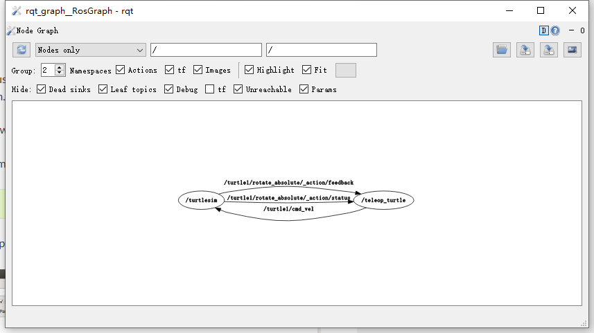
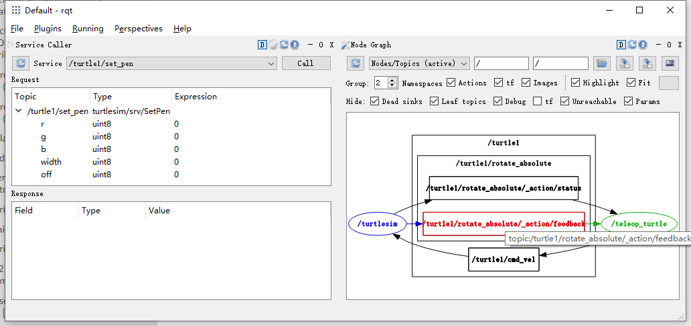
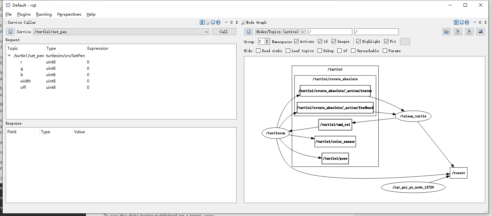
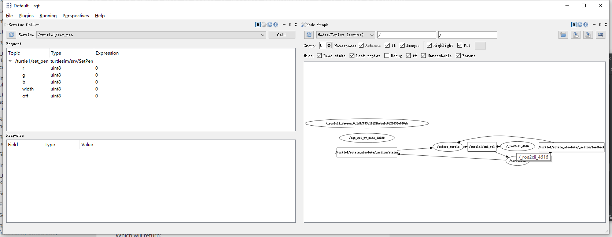
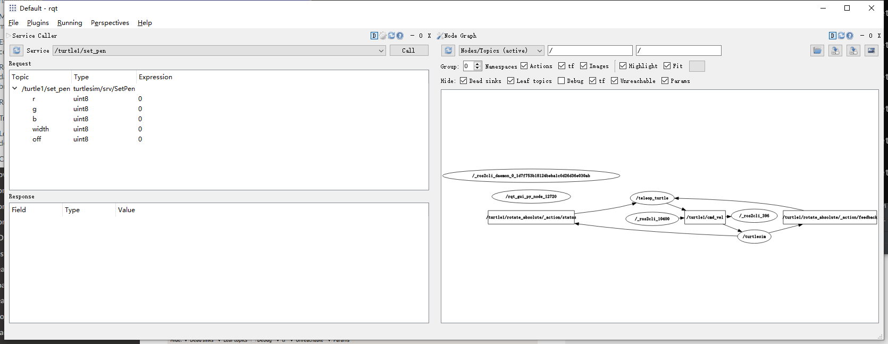
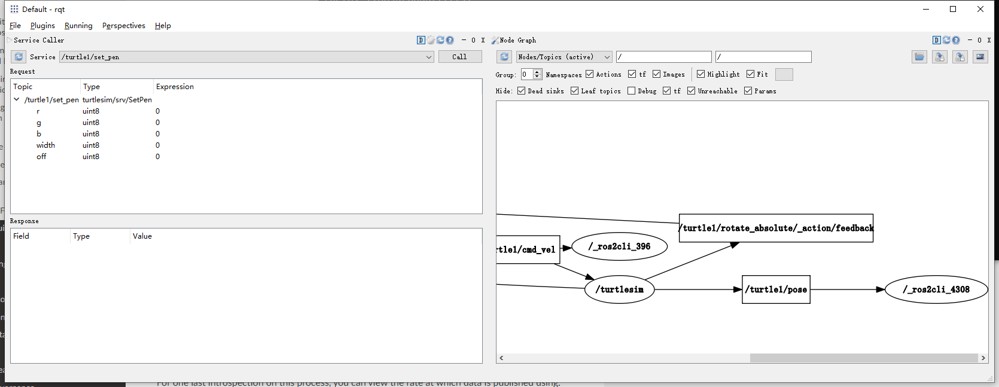

理解 ROS2 topics
目录
背景
ROS2 将复杂的系统分解成许多模块化的 nodes。topics 是 ROS 图中的一个重要元素，它充当 nodes 交换消息的总线（bus）。

一个 node 可以向任意数量的 topics 发布数据，同时还可以订阅任意数量的 topics。

topics 是数据在 nodes 之间以及在系统的不同部分之间移动的主要方式之一。
前提条件
1. 设置
到目前为止，你应该已经习惯了启动 turtlesim 了。
打开一个新的终端并运行:
ros2 run turtlesim turtlesim_node
打开另一个终端并运行:
ros2 run turtlesim turtle_teleop_key
回想一下在前一个教程中，这些 node 的名称默认为 /turtlesim 和 /teleop_turtle。
2. rqt_graph
在本教程中，我们将使用 rqt_graph 可视化变化的 nodes 和 topics，以及它们之间的连接。
Turtlesim 教程 告诉您如何安装 rqt 及其所有插件，包括 rqt_graph。
要运行 rqt_graph，打开一个新的终端并输入以下命令:
rqt_graph

你也可以通过打开 rqt 并选择 Plugins > Introspection > Node Graph 来打开 rqt_graph。

您应该看到上面的 nodes 和 topics，以及图的外围的两个 actions（现在我们暂时忽略这些）。如果你将鼠标悬停在中间的 topic 上，你会看到类似上面图片的颜色高亮。
该图描绘了 /turtlesim node 和 /teleop_turtle node 如何在一个 topic 上相互通信。/teleop_turtle node 将数据（您输入的用于移动乌龟的按键）发布到 /turtle1/cmd_vel topic 上，而 /turtlesim node 订阅了该 topic 以接收数据。
rqt_graph 的突出显示功能在检查具有多个 nodes 和 topics 以多种不同方式连接的更复杂的系统时非常有用。
因此我们看到，rqt_graph 其实是一个图形化的自省工具。现在我们来看一些用于查看 topic 的命令行工具。
3. ros2 topic list
在新的终端中运行 ros2 topic list 命令将返回系统中当前活动的所有 topics 列表:
> ros2 topic list
/parameter_events
/rosout
/turtle1/cmd_vel
/turtle1/color_sensor
/turtle1/pose
ros2 topic list -t 将返回相同的 topics 列表，这一次在括号中添加了 topic 类型:
> ros2 topic list -t
/parameter_events [rcl_interfaces/msg/ParameterEvent]
/rosout [rcl_interfaces/msg/Log]
/turtle1/cmd_vel [geometry_msgs/msg/Twist]
/turtle1/color_sensor [turtlesim/msg/Color]
/turtle1/pose [turtlesim/msg/Pose]
这些属性，特别是 topic 的类型，是 nodes 在不同 topics 之间切换时如何确定它们在谈论相同类型的信息。
如果你想知道所有这些 topics 在 rqt_graph 中的位置，你可以取消选中 Hide 下面的所有 Check 框:

不过，现在，为了避免混淆，还是让这些选项处于 checked 状态吧。
4. ros2 topic echo
要查看某个 topic 上发布的数据，请使用:
ros2 topic echo <topic_name>
既然我们知道 /teleop_turtle node 在 /turtle1/cmd_vel topic 上向 /turtlesim node 上发布数据，那么让我们使用 ros2 topic echo 命令对这个 topic 进行内省:
ros2 topic echo /turtle1/cmd_vel
起初，这个命令不会返回任何数据，因为它在等待 /teleop_turtle 发布某些内容。
返回到 turtle_teleop_key 正在运行的终端，并使用方向按键移动乌龟。观察你的 ros2 topic echo 运行的终端，你会看到你每一个动作的位置数据被发布:
> ros2 topic echo /turtle1/cmd_vel
linear:
x: 2.0
y: 0.0
z: 0.0
angular:
x: 0.0
y: 0.0
z: 0.0
---
linear:
x: 2.0
y: 0.0
z: 0.0
angular:
x: 0.0
y: 0.0
z: 0.0
---
linear:
x: 0.0
y: 0.0
z: 0.0
angular:
x: 0.0
y: 0.0
z: -2.0
---
现在返回 rqt_graph 并取消选中 Debug 框。

/_ros2cli_4616 是由我们刚才运行的 ros2 topic echo 命令创建的 node（数字可能不同）。现在您可以看到发布者正在通过 cmd_vel topic 发布数据，并且订阅了两个订阅者（一个是 /turtlesim，另一个是 /_ros2cli_4616）。
5. ros2 topic info
topic 不必只是点对点的交流; 它可以是一对多、多对一或多对多。
另一种看待这个问题的方式是打开一个新终端并运行:
> ros2 topic info /turtle1/cmd_vel
Type: geometry_msgs/msg/Twist
Publisher count: 1
Subscription count: 2
6. ros2 interface show
nodes 使用消息通过 topics 发送数据。发布者和订阅者必须发送和接收相同类型的消息以进行通信。
在运行 ros2 topic list -t 后，我们前面看到的 topic 类型让我们知道每个 topic 使用的消息类型。回想一下 cmd_vel topic 的类型:
geometry_msgs/msg/Twist
这意味着在名为 geometry_msgs 的 ROS2 包中有一个名为 Twist 的 msg。
现在我们可以在这个类型上运行 ros2 interface show <msg type> 来了解它的详细信息，特别是消息需要什么样的数据结构。
> ros2 interface show geometry_msgs/msg/Twist
# This expresses velocity in free space broken into its linear and angular parts.
Vector3 linear
float64 x
float64 y
float64 z
Vector3 angular
float64 x
float64 y
float64 z
这告诉您 /turtlesim node 期待一个包含两个向量（linear 和 angular）的消息，每个向量包含三个元素。如果你还记得我们看到 /teleop_turtle 用 ros2 topic echo 命令传递给 /turtlesim 的数据，它们的结构是一样的:
linear:
x: 2.0
y: 0.0
z: 0.0
angular:
x: 0.0
y: 0.0
z: 0.0
---
7. ros2 topic pub
现在您已经有了消息结构，您可以使用以下命令直接从命令行向 topic 发布数据:
ros2 topic pub <topic_name> <msg_type> '<args>'
'<args>' 参数是您将传递给 topic 的实际数据，在上一节中您刚刚发现的结构中。
需要注意的是，这个参数需要在 YAML 语法中输入:
ros2 topic pub --once /turtle1/cmd_vel geometry_msgs/msg/Twist "{linear: {x: 2.0, y: 0.0, z: 0.0}, angular: {x: 0.0, y: 0.0, z: 1.8}}"
--once 是一个可选参数，意思是“发布一条消息然后退出”。
你会在终端机收到以下讯息:
> ros2 topic pub --once /turtle1/cmd_vel geometry_msgs/msg/Twist "{linear: {x: 2.0, y: 0.0, z: 0.0}, angular: {x: 0.0, y: 0.0, z: 1.8}}"
publisher: beginning loop
publishing #1: geometry_msgs.msg.Twist(linear=geometry_msgs.msg.Vector3(x=2.0, y=0.0, z=0.0), angular=geometry_msgs.msg.Vector3(x=0.0, y=0.0, z=1.8))
你会看到你的乌龟像这样移动:

海龟（通常是它想要模仿的真正的机器人）需要一系列稳定的命令来持续运行。所以，为了让乌龟继续移动，你可以运行命令:
ros2 topic pub --rate 1 /turtle1/cmd_vel geometry_msgs/msg/Twist "{linear: {x: 2.0, y: 0.0, z: 0.0}, angular: {x: 0.0, y: 0.0, z: 1.8}}"
不同之处在于删除了 --once 选项和增加了 --rate 1 选项，后者告诉 ros2 topic pub 以 1 Hz 的频率持续地地发布消息。

您可以刷新 rqt_graph 以图形化的形式查看发生了什么。您将看到 ros 2 topic pub ... 执行后，node（/_ros2cli_10400）正在 /turtle1/cmd_vel topic 上发布消息，并且正在被 ros2 topic echo ... 的 node（/_ros2cli_396）和 /turtlesim node 接收。

最后，您可以在 /turtle1/pose topic 上运行 ros2 topic echo 命令并重新检查 rqt_graph:
ros2 topic echo /turtle1/pose

您可以看到 /turtlesim node 也将消息发布到 /turtle1/pose topic，新的 echo 命令 node 将订阅该 topic。
8. ros2 topic hz
对于这个过程的最后一次自省，您可以使用以下命令查看数据发布的速率:
> ros2 topic hz /turtle1/pose
average rate: 59.354
min: 0.005s max: 0.027s std dev: 0.00284s window: 58
它将返回关于 /turtlesim node 向 /turtle1/pose topic 发布数据的速率。
回想一下，你设置了 turtle1/cmd_vel 的发布频率为 1 Hz，因为使用的是 ros2 topic pub --rate 1 ... 命令。如果你用 turtle1/cmd_vel 而不是 turtle1/pose 运行上面的命令，你会看到一个反映该速率的平均值。
9. 清理
此时，您将有许多 nodes 在运行。不要忘记在每个终端输入 Ctrl + C 来关闭它们。
小结
nodes 在 topics 上发布消息，从而允许任意数量的其他 nodes 订阅和访问该消息。在本教程中，您使用 rqt_graph 和命令行工具研究了 topic 上几个 nodes 之间的连接。您现在应该对数据如何在 ROS2 系统中流动有了一个很好的了解。